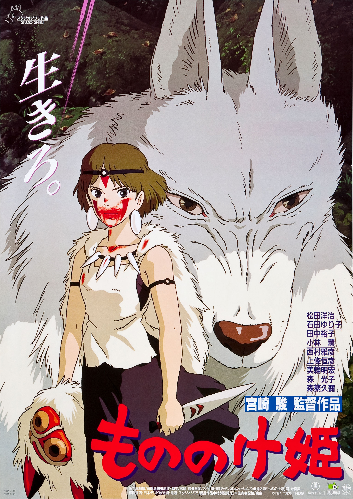

幽灵公主（もののけ姫，1997）
一句话短评：
内容简介：
- 为了拯救危难中的村民，阿斯达卡的右手中了凶煞神的诅咒。达卡只好离开亲人往西方流浪以寻找解除诅咒的方法。旅途中他遇到了由幻姬大人带领的穷苦村民在麒麟兽的森林里开采铁矿，提炼矿石。 白狼神莫娜和她养大的人类女孩“幽灵公主”桑对幻姬恨之入骨，因为她们觉得幻姬带领众人破坏了森林。想帮助人类的阿斯达卡被桑深深吸引，他理解她，但为了帮助穷人又不得不和她作战。一次战斗中，阿斯达卡被麒麟兽所救，他的立场更加摇摆不定。 这时，以疙瘩和尚为首的一群人来杀麒麟兽，幻姬以火枪击毙了麒麟，麒麟的头被疙瘩和尚抢走。愤怒的麒麟的灵魂为夺回自己的头，大肆破坏着森林。阿斯达卡和桑联手决定帮麒麟夺回头颅。
短评：
- 探讨过“反战”之后，宫崎骏把主题直刺人类的心脏——“人与自然的关系”。尽管宫崎骏自己也没有答案，但年纪已高的他忍着伤痛完成了这部触及人类内心深处的伟大史诗动画。加上久石让画龙点睛的配乐，使全片充满了浓郁的古日本风情，奏出了苍凉广阔、荡气回肠的效果。震撼又震惊！ ——老朱無電影不歡
可播放资源：